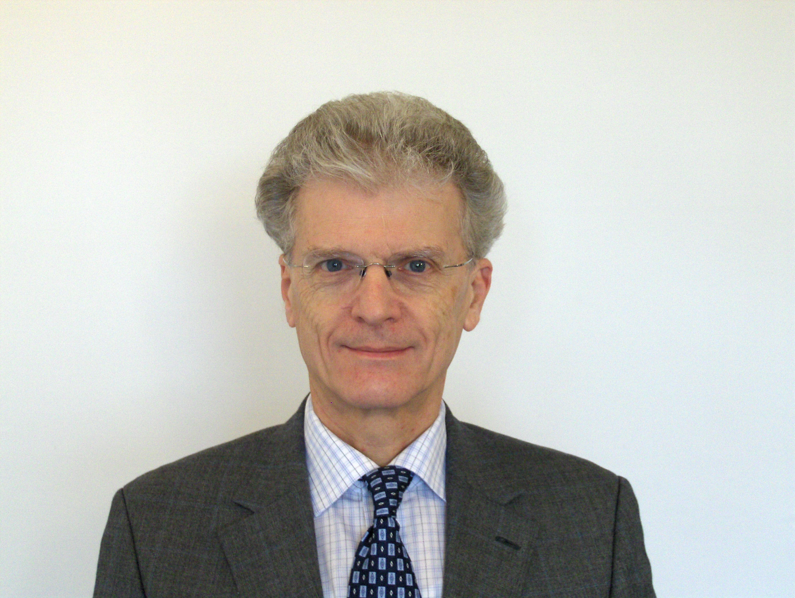

Professor E.Brian Davies, FRS
|
CONFERENCE SPEAKERS:
- Albrecht Boettcher (Chemnitz)
- Nick Higham (Manchester)
- Frederic Klopp (Paris-13)
- Vladimir Maz'ya (Linkoping and Liverpool)
- Barry Simon (Caltech)
- John Toland (Bath)
- Nick Trefethen (Oxford)
- Maciej Zworski (Berkeley)
SEMINAR SPEAKERS:
- Lyonell Boulton (Heriot-Watt)
- Gerassimos Barbatis (Athens)
|